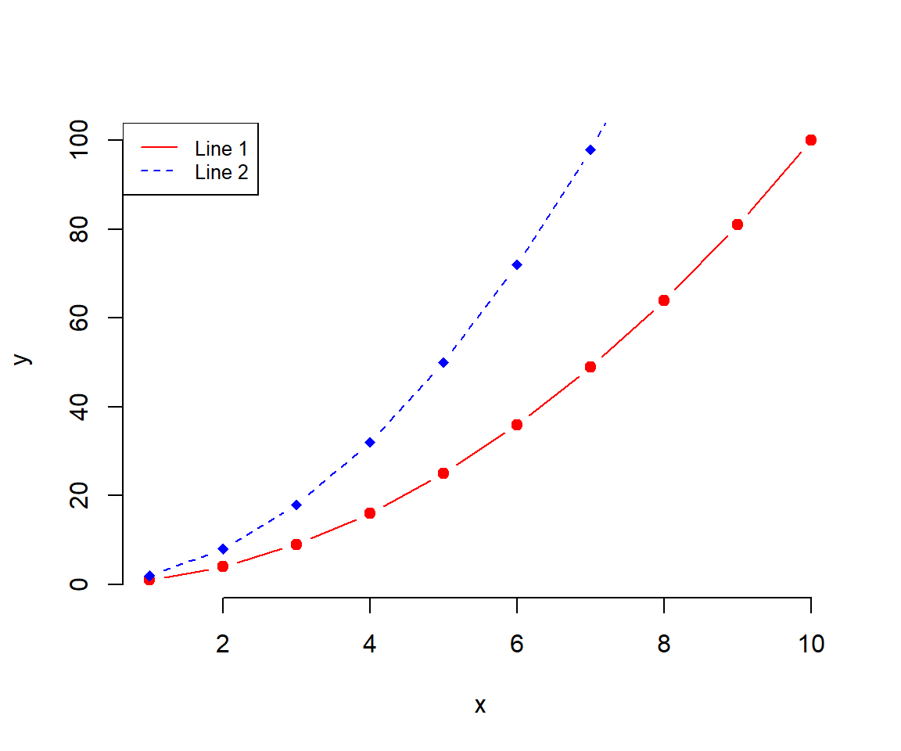

Chapter 5 Panel Data
Learning Goals
- Conceptual Skills:
- Understand panel data. Panel attrition.
- Distinguish between and within variation.
- Compare the paired and unpaired t-Test to panel data.
- Data Skills:
- How
set.seed()defeats randomness.
- Find and use functions from other people.
- Tidyverse e.g.
group_by(),sample_n(),summarize(),count(),arrange(). - Data Visualization: Panel plots (time series per group).
- How
Panel data are observations for the same subjects over time. Subjects can be people, households, firms or countries. Panel data are a subset of longitudinal data. Key components are the panel identifier: person (id) and time (year). Every row is a person-year combination (so called long format).

With panel data we know the time-ordering of events. Panel data allow to identify causal effects under weaker assumptions (compared to cross-sectional data). Especially, panel data allows for certain statistical analyses, e.g. fixed effects regression. Different types of data can answer different types of questions:
- Levels: How many people are poor in 2016 in Germany?
- Trends: Has poverty increased or decreased?
- Change: How many people went in and out of poverty?
Famous household panel data studies include:
- United States: Panel Study of Income Dynamics (PSID) since 1968
- Germany: Socio-Economic Panel (SOEP) since 1984
- United Kingdom: British Household Panel Survey (BHPS) since 1991
- Australia: Household, Income and Labour Dynamics in Australia Survey (HILDA) since 2001
These scientific datasets can often be analyzed for research and student theses free of charge.
5.1 Unemployment
Unemployment occurs when someone is willing and able to work but does not have a paid job. Unemployment is measured by the unemployment rate. The unemployment rate is the most commonly used indicator for understanding conditions in the labour market.
The personal and social costs of unemployment include severe financial hardship and poverty, debt, homelessness and housing stress, family tensions and breakdown, boredom, alienation, shame and stigma, increased social isolation, crime, erosion of confidence and self-esteem, the atrophying of work skills and ill-health.
5.1.1 On decline in Germany
Figure 5.1: Unemployment rate in Germany
How low can the unemployment rate be?
“Here are two things most economists can agree upon: They want an economy where everyone who seeks a job can get one. Yet for the economy to be dynamic, some people will always be unemployed, at least temporarily as they move between jobs.”
Life after collage.

Panel data allows to analyze the level of unemployment in Germany as well as the changes and trajectories of individuals. We can separate a frictional unemployment component and a permanent unemployment share. Frictional unemployment is a form of unemployment reflecting the gap between someone voluntarily leaving a job and finding another. As such, it is sometimes called search unemployment. Is search unemployment acceptable? Is it different from long-term unemployment? What do you think.
5.1.2 Measurement
The unemployment rate represents the proportion of the civilian labour force that is unemployed. Consequently, measuring the unemployment rate requires identifying who is in the labour force. The labour force consists of all employed and unemployed persons of working age.
How low can the unemployment rate be?
“Here are two things most economists can agree upon: They want an economy where everyone who seeks a job can get one. Yet for the economy to be dynamic, some people will always be unemployed, at least temporarily as they move between jobs.”
5.2 Application
5.2.1 Data Inspection
Load SOEP practice data comes labeled and ready for analysis.
library(haven)
soep <- read_dta("https://github.com/MarcoKuehne/marcokuehne.github.io/blob/main/data/practice_dataset_eng.dta?raw=true")group_by() is a powerful command, especially when working with panel data. Use count() after group_by() to get the number of observations of each person (id) in the data. When wrapped with head() it display the first six observations.
library(tidyverse)
head(soep %>% group_by(id) %>% count())See result.
## # A tibble: 6 × 2
## # Groups: id [6]
## id n
## <dbl> <int>
## 1 4 5
## 2 8 5
## 3 15 5
## 4 17 5
## 5 28 5
## 6 29 5Adding arrange() means sorting the data by a variable (i.e. the temporarily created variable n) either ascending or descending (from high to low). Ascending is the default. For descending order apply the desc() command.
soep %>% group_by(id) %>% count() %>% arrange(desc(n)) See result.
## # A tibble: 6,355 × 2
## # Groups: id [6,355]
## id n
## <dbl> <int>
## 1 4 5
## 2 8 5
## 3 15 5
## 4 17 5
## 5 28 5
## 6 29 5
## 7 53 5
## 8 56 5
## 9 71 5
## 10 85 5
## # … with 6,345 more rows# A tibble: 3,550 x 2, i.e. there are 3550 ID-groups (or units or people).
Remember that the observation period is between 2015 and 2019, i.e. the minimum number of observations per individual is 1 year, the maximum is 5 years. Over the years, observations get less and less.
table(soep$syear)##
## 2015 2016 2017 2018 2019
## 5527 4987 4720 4351 3937Attrition is the process of dropout from a panel study.
How many people are observed in all years? Filter for a specific n and ask for the number of rows or observations (alternatively you can check the tibble size again).
soep %>% group_by(id) %>% count() %>% filter(n == 5) %>% nrow()erwerb is the employment status in SOEP. Its labels range from -7 to 6. Use the attributes() command on a specific variable. It returns a set of information (object class is list). We can access elements of this list by the $ operator. Did you notice the small mistake in the labels? (Remember this is practice data.)
attributes(soep$erwerb)$labelsSee result.
## [-7] Only available in less restricted edition
## -7
## [-6] Version of questionnaire with modified filtering
## -6
## [-5] Not included in this version of the questionnaire
## -5
## [-4] Inadmissable multiple response
## -4
## [-3] not valid
## -3
## [-2] does not apply
## -2
## [-1] no answer
## -1
## [-1] Employed full-time
## 1
## [-2] Employed part-time
## 2
## [3] Training, apprenticeship
## 3
## [4] Irregular employment or in marginal
## 4
## [5] Not employed
## 5
## [6] Garage for disabled people
## 6# A tibble: 3,550 x 2, i.e. there are 3550 ID-groups (or units or people).
Negative values indicate several different form of missing data in SOEP. Read more on missing conventions Actually, there are no negative values in this dataset. As for levels of a factor variables, labels can be empty.
table(soep$erwerb)##
## 1 2 3 4 5 6
## 8700 3481 695 1446 9169 295.2.2 Data Preparation
We drop small categories with the filter() command. Apply the %in% operator to search for values in a vector. Overwrite the existing data.
soep <- soep %>%
filter(erwerb %in% c(1, 2, 4, 5))We summarize categories with a combination of mutatae() and case_when(). For each value in erwerb conduct a logical comparison via == and assign a new value. In this case it combines Employed part-time with Irregular employment or in marginal.
soep <- soep %>%
mutate(erwerb = case_when(erwerb == 1 ~ "fulltime",
erwerb == 2 ~ "partime",
erwerb == 4 ~ "partime",
erwerb == 5 ~ "unemployed",
TRUE ~ "NA"))The unemployment rate represents the proportion of the civilian labour force that is unemployed. The labour force consists of all employed and unemployed persons of working age. Filter for working age between 18 and 65 years.
soep <- soep %>%
filter(alter %in% c(18:65))group_by() accepts multiple inputs. The following combination returns for each year and each employment status the number of observations.
soep %>%
group_by(syear, erwerb) %>%
summarise(n = n())## `summarise()` has grouped output by 'syear'. You can override using the
## `.groups` argument.## # A tibble: 15 × 3
## # Groups: syear [5]
## syear erwerb n
## <dbl> <chr> <int>
## 1 2015 fulltime 2007
## 2 2015 partime 1084
## 3 2015 unemployed 1163
## 4 2016 fulltime 1798
## 5 2016 partime 964
## 6 2016 unemployed 969
## 7 2017 fulltime 1736
## 8 2017 partime 895
## 9 2017 unemployed 893
## 10 2018 fulltime 1612
## 11 2018 partime 850
## 12 2018 unemployed 776
## 13 2019 fulltime 1465
## 14 2019 partime 778
## 15 2019 unemployed 643Having done this, step back to focus on years again and use different n-values per year to figure out the unemployment. Relate unemployed to those working either fulltime or partime.
soep %>%
group_by(syear, erwerb) %>%
summarise(n = n()) %>%
group_by(syear) %>%
mutate(unemployment_rate = n[3]/(n[1]+n[2]))## `summarise()` has grouped output by 'syear'. You can override using the
## `.groups` argument.## # A tibble: 15 × 4
## # Groups: syear [5]
## syear erwerb n unemployment_rate
## <dbl> <chr> <int> <dbl>
## 1 2015 fulltime 2007 0.376
## 2 2015 partime 1084 0.376
## 3 2015 unemployed 1163 0.376
## 4 2016 fulltime 1798 0.351
## 5 2016 partime 964 0.351
## 6 2016 unemployed 969 0.351
## 7 2017 fulltime 1736 0.339
## 8 2017 partime 895 0.339
## 9 2017 unemployed 893 0.339
## 10 2018 fulltime 1612 0.315
## 11 2018 partime 850 0.315
## 12 2018 unemployed 776 0.315
## 13 2019 fulltime 1465 0.287
## 14 2019 partime 778 0.287
## 15 2019 unemployed 643 0.2875.2.3 Data Visualization
soep %>%
group_by(syear, erwerb) %>%
summarise(n = n()) %>%
group_by(syear) %>%
mutate(unemployment_rate = n[3]/(n[1]+n[2])) %>%
ggplot(aes(x = syear, y = unemployment_rate)) + geom_point()## `summarise()` has grouped output by 'syear'. You can override using the
## `.groups` argument.
5.2.3.1 Obs per group
soep %>%
group_by(id) %>%
count() %>%
ggplot(aes(x = n)) + geom_bar() +
labs(title = "Number of observations per individual") +
theme_classic()5.2.3.2 Unemployment
soep$erwerb
soep %>%
group_by(id) %>%
count() %>%
ggplot(aes(x = n)) + geom_bar() +
labs(title = "Number of observations per individual") +
theme_classic()–> –> –>
–> –> –> –> –> –> –> –> –>
–> –> –> –> –> –> –> –> –> –> –> –> –> –>
–>
–> –> –> –> –> –> –> –> –> –> –> –> –>
–> –>
–> –> –>
–> –> –>
–> –>
–> –>
–> –>
–>
–> –> –> –> –> –>
–>
–> –>
–> –> –> –>
–> –> –> –> –> –> –> –> –> –> –> –>
–> –> –> –> –> –> –> –> –>
–>
–>
–> –> –> –> –> –> –>
–> –> –>
–> –>
–> –>
–>
–> –> –>
–>